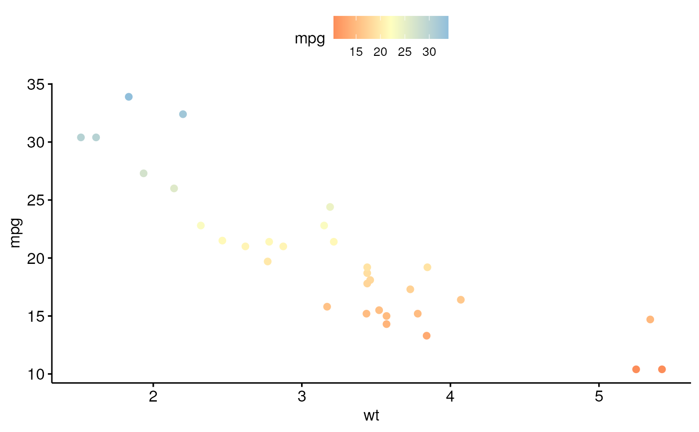

Set Gradient Color
Change gradient color.
-
gradient_color(): Change gradient color. -
gradient_fill(): Change gradient fill.
gradient_color(palette) gradient_fill(palette)
Arguments
- palette
- the color palette to be used for coloring or filling by groups. Allowed values include "grey" for grey color palettes; brewer palettes e.g. "RdBu", "Blues", ...; or custom color palette e.g. c("blue", "red"); and scientific journal palettes from ggsci R package, e.g.: "npg", "aaas", "lancet", "jco", "ucscgb", "uchicago", "simpsons" and "rickandmorty". Can be also a numeric vector; in this case a basic color palette is created using the function palette.
See also
Examples
df <- mtcars p <- ggscatter(df, x = "wt", y = "mpg", color = "mpg") # Change gradient color # Use one custom color p + gradient_color("red")# Two colors p + gradient_color(c("blue", "red"))# Three colors p + gradient_color(c("blue", "white", "red"))# Use RColorBrewer palette p + gradient_color("RdYlBu")# Use ggsci color palette p + gradient_color("npg")